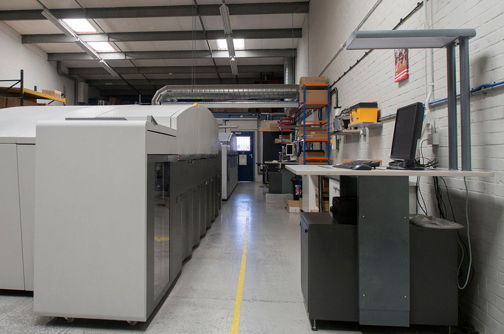
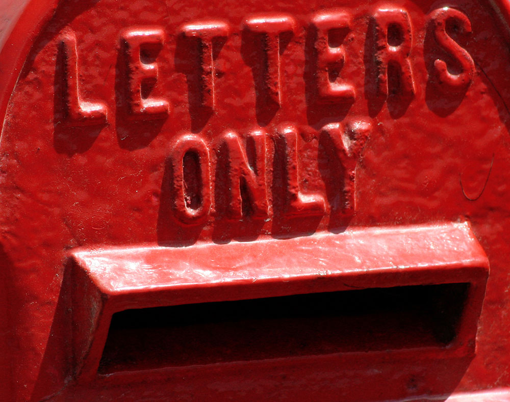

 Printing
Today’s commercial environment demands near-instant response to client requests, and favours personalised communication and results-driven, one-to-one marketing.
X1’s state-of-the-art digital printers allow fast turnaround and cost-effective small print runs. Full colour variable data and image printing allows a wide range of personalisation to be added to your literature, enhancing customer attention and response.
Other printing related services we provide include large format printing on a wide range of different materials.
For more information, please contact Andy Pering on 01753 215340 or email andy@x1.ltd.uk.
Add some ‘touch and feel’ to your products and services
How much is it worth to get more customers to listen to you? What if you could excite them by letting them touch and feel as well as read about the unique value of your products and services?
We can apply a transparent ink layer to your next direct mailing promotion that will enhance the look, feel and memorability of the publicity. Using digital technology allows us to offer customised offers, messages, designs and incentives.
Capturing, and keeping, your target’s attention is not an easy task today, but it should be the first objective in any marketing activity. If you’re interested to get a sample please contact Andy Pering on 01753 215340 or email andy@x1.ltd.uk
 Direct Mail
Over 4 billion pieces of direct mail are delivered in the UK each year. There are some very good reasons for this.
You can prepare and mail a small promotion within weeks rather than months. This makes it a perfect vehicle for testing the latest prices, offers and audiences.
Response is faster. You see the results of a mailing more quickly and accurately than with most other advertising.
“69% open all the mail they receive vs 22% open all the emails – 47% say they receive too much mail vs 70% who say they receive too many emails.”
Source: Quadrangle, Mail & Digital, Part 1, 2013
It is cost-effective. X1 can mail to lists as small as 200. And X1 will target your mailings, meaning more results and less wasted effort.
It is more flexible. After testing a promotion, X1 can fine-tune it based on initial feedback.
It is more personal. Not only can letters be personalised via mail-merging techniques, but you can use more informal language in writing your letter and can direct your letter to the specific interest of the reader.
It can build a list of loyal customers. Direct mail allows you to build and maintain an in-house list of ‘premium prospects’.
“1 in 3 not only look forward to the mail arriving but are disappointed if they don’t receive anything – 70% enjoy receiving vouchers, coupons and discounts through the post.”
Source: DMA from the letter box to the inbox, building customers relationships, 2013
A postal database provides demographic information about a target audience. Marketers can profile the different individuals in that target audience to be able to engage them in a more relevant way.
There is no screening – there is no junk mail filter with direct mail, your recipient will receive what you send them.
People receive far more emails and text messages than postal pieces. Sending an item in the mail means you have more chance of catching your target’s attention.
Marketers can capture their target’s attention by attaching promotional items to a direct mailing piece. Also, paper is tactile and tangible, making it easier for marketers to show the value of what they sell.
X1 has employed the best in marketing knowledge and creativity and invested in the technology that will help you promote your company and services effectively.
We can help you improve your return on marketing investment and sales productivity by offering a variety of marketing services and products including consultancy, cross media and data analytics to suit most business requirements and budgets.
Contact Tim Lance on 01753 215325 or email tim@x1.ltd.uk.